Code
library(tidyverse)
library(ggplot2)
library(viridis)
library(dplyr)
library(plotly)
library(hrbrthemes)
library(gganimate)
library(magick)
knitr::opts_chunk$set(echo = TRUE)library(tidyverse)
library(ggplot2)
library(viridis)
library(dplyr)
library(plotly)
library(hrbrthemes)
library(gganimate)
library(magick)
knitr::opts_chunk$set(echo = TRUE)World development refers to the process of improving the economic and social well-being of people in countries around the world. It encompasses a wide range of areas, including economic growth, poverty reduction, health, education, and access to basic services. The World Bank, a leading global development organization, collects and publishes data on the world development indicators to track progress and inform policy decisions. The World Development Indicators dataset includes information on various factors that contribute to a country’s development, such as gross domestic product, life expectancy, and access to electricity, among others. Understanding and monitoring these indicators is crucial in identifying areas of improvement and addressing the challenges facing countries on their path to development.
Life expectancy is an important indicator of a country’s level of development. It is a measure of the average number of years a person is expected to live in a particular country. Higher life expectancies are generally seen as a sign of improved living conditions, better health care, and higher standards of living. On the other hand, lower life expectancies are often associated with poverty, poor health care, and environmental degradation.
There is a strong correlation between life expectancy and various indicators of a country’s development, including income levels, education, and access to clean water and sanitation. In general, countries with higher levels of economic development tend to have longer life expectancies, while those with lower levels of economic development tend to have shorter life expectancies.
Improving life expectancy is a key goal of many development initiatives, as it is not only an indicator of health and well-being, but also an indicator of a country’s overall progress and potential for future growth. By monitoring and improving life expectancy, policymakers and development practitioners can help ensure that people in their countries live longer, healthier, and more prosperous lives.
data_r = read_csv("_data/WDI/Indicators.csv")Rows: 5656458 Columns: 6
── Column specification ────────────────────────────────────────────────────────
Delimiter: ","
chr (4): CountryName, CountryCode, IndicatorName, IndicatorCode
dbl (2): Year, Value
ℹ Use `spec()` to retrieve the full column specification for this data.
ℹ Specify the column types or set `show_col_types = FALSE` to quiet this message.data_r# A tibble: 5,656,458 × 6
CountryName CountryCode IndicatorName Indic…¹ Year Value
<chr> <chr> <chr> <chr> <dbl> <dbl>
1 Arab World ARB Adolescent fertility rate (bir… SP.ADO… 1960 1.34e+2
2 Arab World ARB Age dependency ratio (% of wor… SP.POP… 1960 8.78e+1
3 Arab World ARB Age dependency ratio, old (% o… SP.POP… 1960 6.63e+0
4 Arab World ARB Age dependency ratio, young (%… SP.POP… 1960 8.10e+1
5 Arab World ARB Arms exports (SIPRI trend indi… MS.MIL… 1960 3 e+6
6 Arab World ARB Arms imports (SIPRI trend indi… MS.MIL… 1960 5.38e+8
7 Arab World ARB Birth rate, crude (per 1,000 p… SP.DYN… 1960 4.77e+1
8 Arab World ARB CO2 emissions (kt) EN.ATM… 1960 5.96e+4
9 Arab World ARB CO2 emissions (metric tons per… EN.ATM… 1960 6.44e-1
10 Arab World ARB CO2 emissions from gaseous fue… EN.ATM… 1960 5.04e+0
# … with 5,656,448 more rows, and abbreviated variable name ¹IndicatorCodeTo review what World Development Indicators dataset is from homeworks. I have provided a brief summary of it before we proceed with any analysis. The World Development Indicators dataset was utilized to determine the elements that play a role in a country’s growth and progress. The data covers a span of 60 years from 1960 to 2020 for 247 nations and features 5.6 million rows and 1344 indicators. The data used for analysis is a modified version from the original dataset provided by the World Bank, an organization that offers a variety of financial services. The World Development Indicators dataset is a valuable resource containing information on the factors that drive global development.
Before removing the Null values, the dataset was joined with data on Continents using the country code. This facilitated creating multiple visualizations for a deeper understanding of the data. A new dataset was created by grouping the data by continent, using the country code to extract information. This allowed for the data to be organized based on the different continents.
continentData = read_csv("_data/WDI/Continents_Countries_v2.csv")Rows: 249 Columns: 2
── Column specification ────────────────────────────────────────────────────────
Delimiter: ","
chr (2): CountryCode, Continent
ℹ Use `spec()` to retrieve the full column specification for this data.
ℹ Specify the column types or set `show_col_types = FALSE` to quiet this message. data <- left_join(data_r, continentData, by = 'CountryCode')The dataset cleaning and preparation involved addressing the 5.6 million rows and 1344 indicators with missing values. This required handling several blank sections of data and importing missing information from other sources to complete the CSV files.
# Removing Null values
data <- data %>%
#filter(!(Continent == "NA"))
filter(!is.na(Continent))
data# A tibble: 4,827,592 × 7
CountryName CountryCode IndicatorName Indic…¹ Year Value Conti…²
<chr> <chr> <chr> <chr> <dbl> <dbl> <chr>
1 Afghanistan AFG Adolescent fertility r… SP.ADO… 1960 1.45e+2 Asia
2 Afghanistan AFG Age dependency ratio (… SP.POP… 1960 8.17e+1 Asia
3 Afghanistan AFG Age dependency ratio, … SP.POP… 1960 5.09e+0 Asia
4 Afghanistan AFG Age dependency ratio, … SP.POP… 1960 7.66e+1 Asia
5 Afghanistan AFG Arms imports (SIPRI tr… MS.MIL… 1960 4 e+7 Asia
6 Afghanistan AFG Birth rate, crude (per… SP.DYN… 1960 5.13e+1 Asia
7 Afghanistan AFG CO2 emissions (kt) EN.ATM… 1960 4.14e+2 Asia
8 Afghanistan AFG CO2 emissions (metric … EN.ATM… 1960 4.61e-2 Asia
9 Afghanistan AFG CO2 emissions from gas… EN.ATM… 1960 0 Asia
10 Afghanistan AFG CO2 emissions from gas… EN.ATM… 1960 0 Asia
# … with 4,827,582 more rows, and abbreviated variable names ¹IndicatorCode,
# ²ContinentThe World Development Indicators dataset is largely in a tidy format, with each variable having its own column and values within them, and each observation having its own row. Despite its large size, which is due to the multiple countries and various development factors being analyzed, the data is well organized. However, preparing and cleaning the dataset was a challenge, requiring modifications to the CSV file due to its size.
summary(data_r) CountryName CountryCode IndicatorName IndicatorCode
Length:5656458 Length:5656458 Length:5656458 Length:5656458
Class :character Class :character Class :character Class :character
Mode :character Mode :character Mode :character Mode :character
Year Value
Min. :1960 Min. :-9.825e+15
1st Qu.:1984 1st Qu.: 6.000e+00
Median :1997 Median : 6.400e+01
Mean :1994 Mean : 1.071e+12
3rd Qu.:2006 3rd Qu.: 1.347e+07
Max. :2015 Max. : 1.103e+16 To summarize the data and gain a better understanding of the columns and their datatypes, the summary function was employed. This generated the mean, first quartile, and third quartile of the numerical attributes.
data_LifeExpectancy <- data %>%
filter(IndicatorName == "Life expectancy at birth, total (years)")
data_LifeExpectancy# A tibble: 10,247 × 7
CountryName CountryCode IndicatorName Indic…¹ Year Value Conti…²
<chr> <chr> <chr> <chr> <dbl> <dbl> <chr>
1 Afghanistan AFG Life expectancy … SP.DYN… 1960 32.3 Asia
2 Albania ALB Life expectancy … SP.DYN… 1960 62.3 Europe
3 Algeria DZA Life expectancy … SP.DYN… 1960 46.1 Africa
4 Angola AGO Life expectancy … SP.DYN… 1960 33.0 Africa
5 Antigua and Barbuda ATG Life expectancy … SP.DYN… 1960 61.8 North …
6 Argentina ARG Life expectancy … SP.DYN… 1960 65.2 South …
7 Armenia ARM Life expectancy … SP.DYN… 1960 65.9 Asia
8 Aruba ABW Life expectancy … SP.DYN… 1960 65.6 North …
9 Australia AUS Life expectancy … SP.DYN… 1960 70.8 Oceania
10 Austria AUT Life expectancy … SP.DYN… 1960 68.6 Europe
# … with 10,237 more rows, and abbreviated variable names ¹IndicatorCode,
# ²ContinentAs the aim is to study the world’s development based on a few selected indicators, a subset of the World Development Indicators dataset was created for each indicator. For example, a subset of the life expectancy data was created to analyze the trend of average life expectancy over the years. This subset was used to answer one of the research questions focused on exploring the trend of life expectancy across the world. By obtaining these subsets, it becomes easier to study specific aspects of development and draw meaningful insights and conclusions.
STATISTICS
data_group_Country <- data_LifeExpectancy %>%
group_by(CountryName)
data_group_Country# A tibble: 10,247 × 7
# Groups: CountryName [200]
CountryName CountryCode IndicatorName Indic…¹ Year Value Conti…²
<chr> <chr> <chr> <chr> <dbl> <dbl> <chr>
1 Afghanistan AFG Life expectancy … SP.DYN… 1960 32.3 Asia
2 Albania ALB Life expectancy … SP.DYN… 1960 62.3 Europe
3 Algeria DZA Life expectancy … SP.DYN… 1960 46.1 Africa
4 Angola AGO Life expectancy … SP.DYN… 1960 33.0 Africa
5 Antigua and Barbuda ATG Life expectancy … SP.DYN… 1960 61.8 North …
6 Argentina ARG Life expectancy … SP.DYN… 1960 65.2 South …
7 Armenia ARM Life expectancy … SP.DYN… 1960 65.9 Asia
8 Aruba ABW Life expectancy … SP.DYN… 1960 65.6 North …
9 Australia AUS Life expectancy … SP.DYN… 1960 70.8 Oceania
10 Austria AUT Life expectancy … SP.DYN… 1960 68.6 Europe
# … with 10,237 more rows, and abbreviated variable names ¹IndicatorCode,
# ²Continentdata_LifeExpectancy %>%
summarise(Average_LifeExpectancy = mean(Value, nr.rm = TRUE),
Median_LifeExpectancy = median(Value, nr.rm = TRUE))# A tibble: 1 × 2
Average_LifeExpectancy Median_LifeExpectancy
<dbl> <dbl>
1 63.3 66.4To gain a deeper understanding of the life expectancy data, the subset was grouped by country. By doing so, various statistics were calculated, including the means and medians of life expectancy for each country. Some countries had mean life expectancies that were the same as their median life expectancies, like- Australia. This indicates that the growth of life expectancy in these countries has been relatively stable over the years, with no sudden spikes. By grouping the data by country, it is possible to obtain a clearer picture of the trends and patterns in life expectancy and make meaningful comparisons between countries.
Further detailed analysis of each selected indicator will be provided.
The hypothesis is that life expectancy is improving for the majority of countries across the world and that a country’s development and growth are motivating factors for the increase in life expectancy. The goal of the analysis is to determine if the hypothesis is supported by the data. If it is, the next step would be to identify the major factors that contribute to the increase in life expectancy and assess their impact. This analysis will help to understand the relationship between a country’s development and its life expectancy and provide valuable insights for policymakers and development practitioners.
Based on this tried to answer these two research questions.
Is the trend of life expectancy improving globally and how has it changed over the years for each continent?
What are the other key factors that play a role in improving a country’s life expectancy and how significant is their impact?
The trend of life expectancy across the globe can only be determined by analyzing the data. The World Development Indicators dataset provides data on life expectancy for 247 countries over 60 years (1960-2020). To answer the question of whether life expectancy is getting better, it is necessary to examine the data for each country and for the world as a whole.
# animation for all countries
data_filtered <- data %>%
filter(IndicatorName =="Life expectancy at birth, total (years)")
# Make a ggplot, but add frame=year: one image per year
anim1 <- ggplot(data_filtered, aes(Year, Value, size = round(Value/10,2), color = Continent)) +
geom_point() +
scale_x_log10() +
theme_bw() +
# gganimate specific bits:
labs(title = 'Year: {frame_time}', x = 'Year', y = 'life expectancy') +
transition_time(Year) +
ease_aes('linear')
animate(anim1, renderer = magick_renderer(loop = TRUE))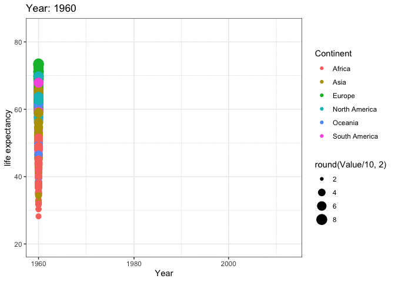
The use of animation helps to better understand the trends in life expectancy over the years, grouped by continents. Some continents show a significant increase in life expectancy over time, while others show a more modest increase. However, there is an overall increase in life expectancy across all continents. For a more detailed analysis of life expectancy by country, separate graphs can also be plotted.
#Boxplot
data_filtered <- data %>%
filter(IndicatorName =="Life expectancy at birth, total (years)")%>%
filter(Year %in% c(1960, 2010))
ggplot(data_filtered, aes(factor(Year), Value)) +
geom_boxplot(aes(fill = Continent)) + # add colour to boxplots
geom_jitter(alpha = 0.4) + # alpha = transparency
facet_wrap(~ Continent, ncol = 5) + # spread by continent
theme(legend.position = "none") + # remove legend
xlab("Year") + # label x-axis
ylab("Life expectancy (years)") + # label y-axis
ggtitle(
"Life expectancy by continent in 1960 vs 2015") 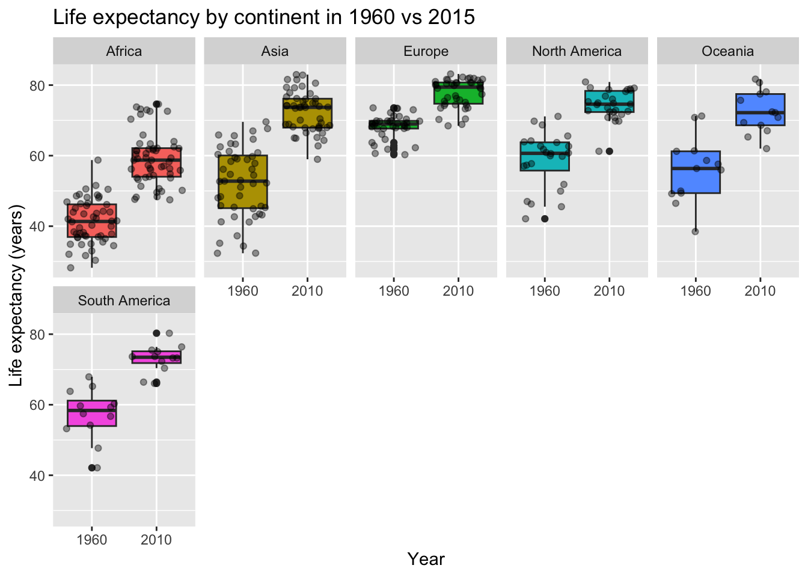
A boxplot is a useful tool for analyzing the distribution of a dataset, specifically the median, quartiles, and outliers. In this case, the boxplot can help to determine the life expectancy for different continents over the years by showing the spread and distribution of the data. The boxplot can reveal patterns in the data, such as the increase in life expectancy for some continents, as well as the median and quartile values. By examining the boxplot, one can determine whether there is a significant increase in life expectancy for a particular continent and identify any outliers that may be affecting the overall trend. From the plot, it is observed that there is a significant increase in life expectancy for Africa from 40 years to 58 years. The spread in the life expectancy for most countries in 2015 is lower for all continents, indicating a more consistent and improved life expectancy trend across the world.
To determine how life expectancy is affected in each continent over the years, the data can be grouped by continent and analyzed for trends and patterns. This will provide a broad understanding of the changes in life expectancy across different regions of the world and allow for meaningful comparisons between continents. The results of this analysis will give insight into the factors that contribute to changes in life expectancy and highlight any regional differences.
#Continents animation of LE
data_filtered <- data %>%
filter(Continent %in% c("Africa", "Asia", "Europe", "North America", "Oceania", "South America")) %>%
filter(IndicatorName=="Life expectancy at birth, total (years)")
# Make a ggplot, but add frame=year: one image per year
anim2 <- ggplot(data_filtered, aes(Year, Value, size = round(Value/10,2), colour = CountryName)) +
geom_point(alpha = 0.7, show.legend = FALSE) +
scale_size(range = c(2, 12)) +
scale_x_log10() +
facet_wrap(~Continent) +
# Here comes the gganimate specific bits
labs(title = 'Year: {frame_time}', x = 'Years', y = 'life expectancy') +
transition_time(Year) +
ease_aes('linear')
animate(anim2, renderer = magick_renderer(loop = TRUE))
# Lineplot of LE for all Continents
data_filtered <- data %>%
filter(Continent %in% c("Africa", "Asia", "Europe", "North America", "Oceania", "South America")) %>%
filter(IndicatorName=="Life expectancy at birth, total (years)")
# Plot
data_filtered %>%
ggplot( aes(x=Year, y=Value, group=Continent, fill=Continent)) +
geom_area() +
scale_fill_viridis(discrete = TRUE) +
theme(legend.position="none") +
ggtitle("Life Expectancy over the years") +
theme_ipsum() +
theme(
legend.position="none",
panel.spacing = unit(0, "lines"),
strip.text.x = element_text(size = 8),
plot.title = element_text(size=13)
) +
facet_wrap(~Continent, scale="free_y")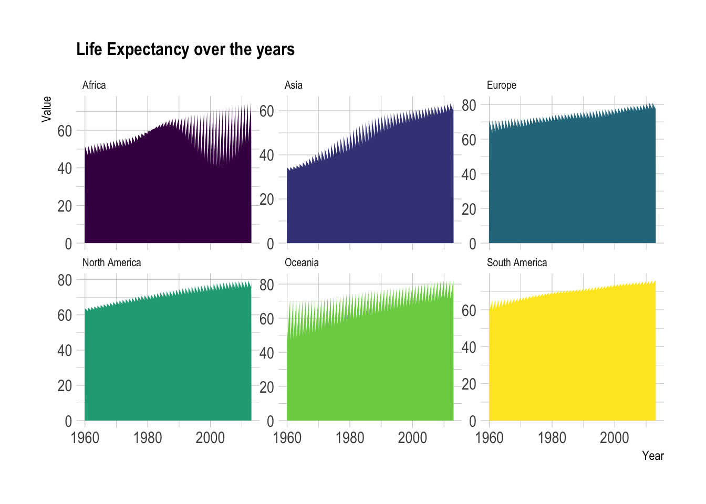
This indicates that the life expectancy has been improving for majority of the countries in all continents like Europe, North America, Ocenia, and South America. Although there are some fluctuations in some continents like- Africa, overall the trend is towards an increase in life expectancy.
Provided animations for each continent which will help to analyze the trend of life expectancy for their respective countries.
AFRICA
# filter dataset
data_filtered <- data %>%
filter(Continent == "Africa") %>%
filter(IndicatorName =="Life expectancy at birth, total (years)")
# Make a ggplot, but add frame=year: one image per year
anim3 <- ggplot(data_filtered, aes(Year, Value, size = round(Value/10,2), color = CountryName)) +
geom_point() +
scale_x_log10() +
theme_bw() +
# gganimate specific bits:
labs(title = 'Year: {frame_time}', x = 'Year', y = 'life expectancy') +
transition_time(Year) +
ease_aes('linear')
animate(anim3, renderer = magick_renderer(loop = TRUE))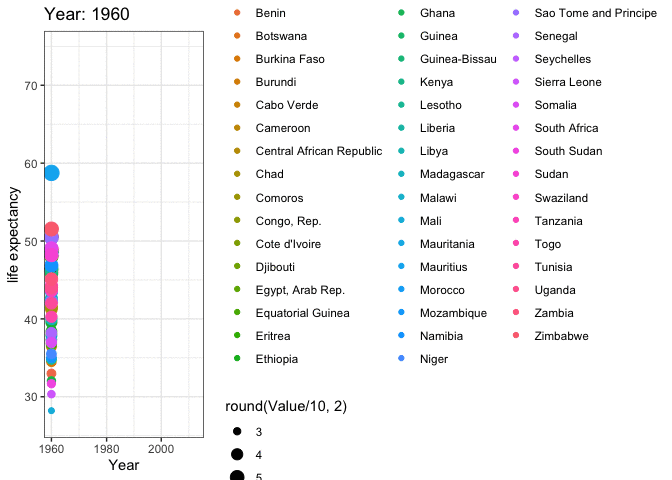
ASIA
# filter dataset
data_filtered <- data %>%
filter(Continent == "Asia") %>%
filter(IndicatorName =="Life expectancy at birth, total (years)")
# Make a ggplot, but add frame=year: one image per year
anim4 <- ggplot(data_filtered, aes(Year, Value, size = round(Value/10,2), color = CountryName)) +
geom_point() +
scale_x_log10() +
theme_bw() +
# gganimate specific bits:
labs(title = 'Year: {frame_time}', x = 'Year', y = 'life expectancy') +
transition_time(Year) +
ease_aes('linear')
animate(anim4, renderer = magick_renderer(loop = TRUE))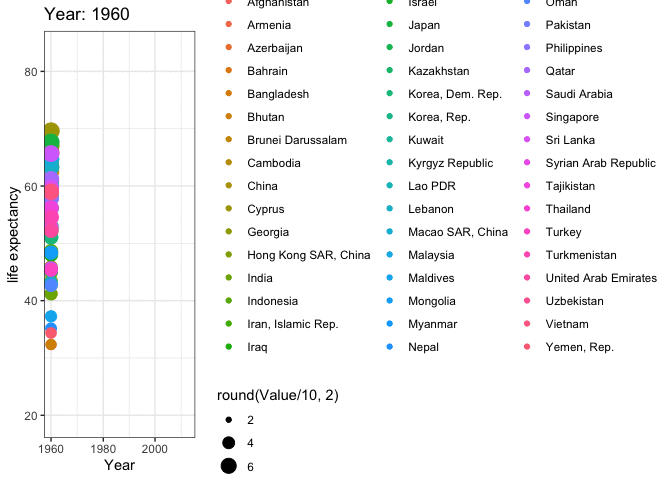
EUROPE
# filter dataset
data_filtered <- data %>%
filter(Continent == "Europe") %>%
filter(IndicatorName =="Life expectancy at birth, total (years)")
# Make a ggplot, but add frame=year: one image per year
anim5 <- ggplot(data_filtered, aes(Year, Value, size = round(Value/10,2), color = CountryName)) +
geom_point() +
scale_x_log10() +
theme_bw() +
# gganimate specific bits:
labs(title = 'Year: {frame_time}', x = 'Year', y = 'life expectancy') +
transition_time(Year) +
ease_aes('linear')
animate(anim5, renderer = magick_renderer(loop = TRUE))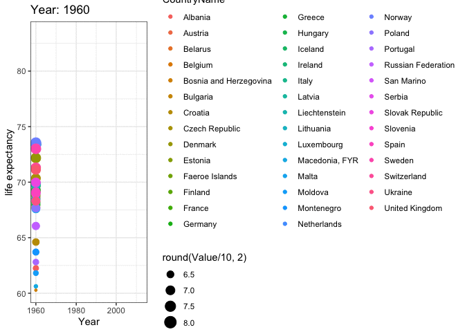
NORTH AMERICA
# filter dataset
data_filtered <- data %>%
filter(Continent == "North America") %>%
filter(IndicatorName =="Life expectancy at birth, total (years)")
# Make a ggplot, but add frame=year: one image per year
anim6 <- ggplot(data_filtered, aes(Year, Value, size = round(Value/10,2), color = CountryName)) +
geom_point() +
scale_x_log10() +
theme_bw() +
# gganimate specific bits:
labs(title = 'Year: {frame_time}', x = 'Year', y = 'life expectancy') +
transition_time(Year) +
ease_aes('linear')
animate(anim6, renderer = magick_renderer(loop = TRUE))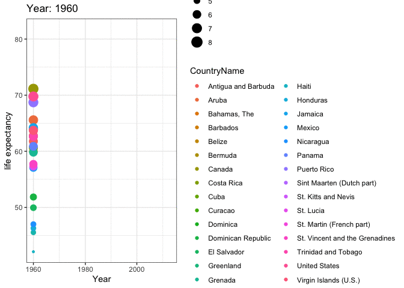
OCEANIA
# filter dataset
data_filtered <- data %>%
filter(Continent == "Oceania") %>%
filter(IndicatorName =="Life expectancy at birth, total (years)")
# Make a ggplot, but add frame=year: one image per year
anim7 <- ggplot(data_filtered, aes(Year, Value, size = round(Value/10,2), color = CountryName)) +
geom_point() +
scale_x_log10() +
theme_bw() +
# gganimate specific bits:
labs(title = 'Year: {frame_time}', x = 'Year', y = 'life expectancy') +
transition_time(Year) +
ease_aes('linear')
animate(anim7, renderer = magick_renderer(loop = TRUE))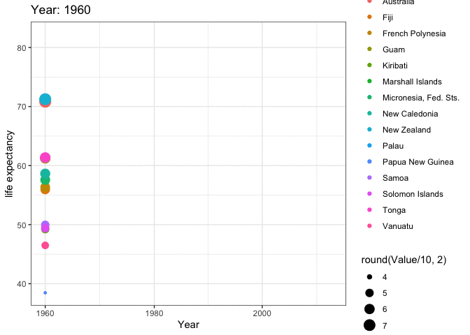
SOUTH AMERICA
# filter dataset
data_filtered <- data %>%
filter(Continent == "South America") %>%
filter(IndicatorName =="Life expectancy at birth, total (years)")
# Make a ggplot, but add frame=year: one image per year
anim8 <- ggplot(data_filtered, aes(Year, Value, size = round(Value/10,2), color = CountryName)) +
geom_point() +
scale_x_log10() +
theme_bw() +
# gganimate specific bits:
labs(title = 'Year: {frame_time}', x = 'Year', y = 'life expectancy') +
transition_time(Year) +
ease_aes('linear')
animate(anim8, renderer = magick_renderer(loop = TRUE))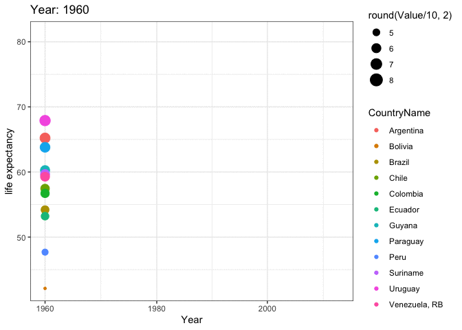
There are several factors that can contribute to the increase of a country’s life expectancy. These factors include but are not limited to:
Healthcare: Access to quality healthcare services and medical advancements can improve life expectancy by reducing mortality rates from illnesses and diseases.
Education: A well-educated population is more likely to have better health outcomes and a longer lifespan.
Economic Development: A strong economy can provide resources for healthcare and education, leading to an increase in life expectancy.
Lifestyle: Healthy habits such as regular exercise and a balanced diet can positively impact life expectancy.
Environmental factors: A clean and safe environment can reduce the risk of illnesses and diseases and improve life expectancy.
The impact of each of these factors on a country’s life expectancy will vary and can only be determined through a thorough analysis of the data. The data can be analyzed to determine the correlations between different factors and life expectancy, which can give insight into the most influential factors and their relative impact.
GDP per capita refers to the gross domestic product (GDP) of a country divided by its total population. It is an economic measure that provides a rough estimate of the standard of living of a country’s citizens. GDP per capita is calculated by taking the country’s GDP and dividing it by the country’s population. This measure is useful for comparing the standard of living of different countries and for analyzing economic growth over time.
data_GDP <- data %>%
filter(IndicatorName == "GDP per capita (constant 2005 US$)")
data_GDP <- data_GDP %>%
rename(GDP = Value)
data_LifeExpectancy <- data_LifeExpectancy %>%
rename(LifeExpectancy = Value)
data_LE_GDP <- left_join(data_LifeExpectancy, data_GDP, by = 'CountryCode')data_filtered <- data_LE_GDP %>%
filter(Continent.x %in% c("Africa", "Asia", "Europe", "North America", "Oceania", "South America"))
anim9 <- ggplot(data_filtered , aes(GDP, LifeExpectancy, colour = CountryName.x)) +
geom_point(alpha = 0.7, show.legend = FALSE, na.rm=TRUE) +
scale_size(range = c(1, 5)) +
scale_x_log10() +
facet_wrap(~Continent.x) +
# Here comes the gganimate specific bits
labs(title = 'Year: {frame_time}', x = 'GDP per capita', y = 'life expectancy') +
transition_time(Year.x) +
ease_aes('linear')
animate(anim9, renderer = magick_renderer(loop = TRUE))
RV.MLG <- round(cor( data_LE_GDP$GDP, data_LE_GDP$LifeExpectancy, use= "pairwise.complete.obs"), digits= 3)
ggplot(data = data_LE_GDP) + aes(y = LifeExpectancy, x = GDP , color= Year.x) +
geom_point(size=0.005, na.rm=TRUE)+
geom_smooth(color="black")+
scale_x_log10() +
facet_wrap(~Continent.x) +
labs(x="GDP", y= "Life Expectancy", color= "Years")+
ggtitle("Correlation between Life Expectancy and GDP", subtitle = str_c("Correlation", " = ", RV.MLG))`geom_smooth()` using method = 'gam' and formula = 'y ~ s(x, bs = "cs")'Warning: Removed 472 rows containing non-finite values (`stat_smooth()`).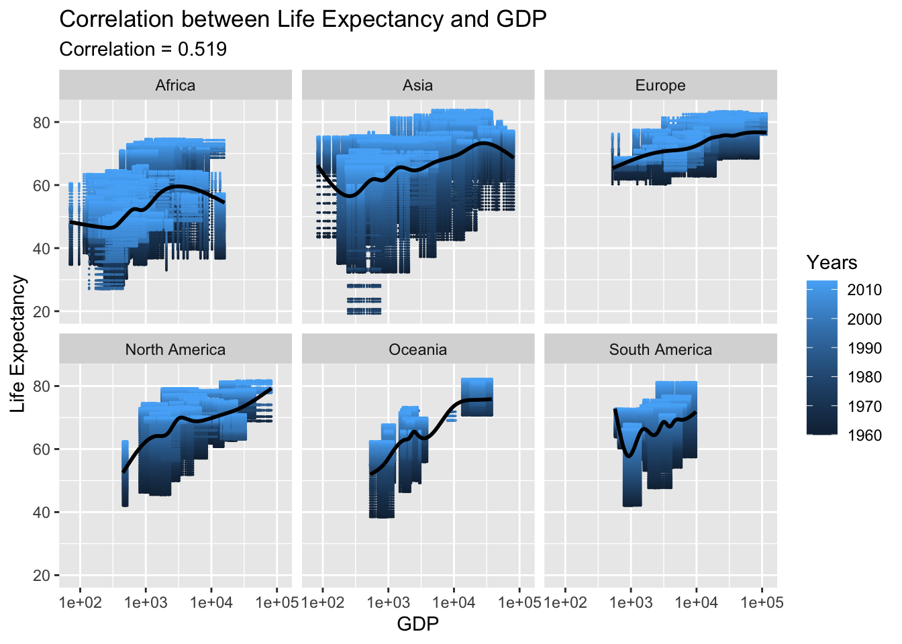
The relationship between Gross Domestic Product (GDP) per capita and life expectancy has been found to be positively correlated, with a correlation coefficient of around 0.519. This suggests that as a country’s GDP per capita increases, so does its life expectancy. In the case of Europe, this relationship appears to be particularly strong and consistent.
Adjusted net national income (ANNI) is a measure of a country’s overall economic production after deducting the cost of natural capital depletion. It is a measure of a country’s income that takes into account the depletion of natural resources and subtracts it from the gross national income (GNI). ANNIs are used to compare the standard of living between countries and are used in the calculation of Gross National Happiness (GNH).
data_Income <- data %>%
filter(IndicatorName == "Adjusted net national income (current US$)")
data_Income <- data_Income %>%
rename(Income = Value)
data_LE_Income <- left_join(data_LifeExpectancy, data_Income, by = 'CountryCode')data_filtered <- data_LE_Income %>%
filter(Continent.x %in% c("Africa", "Asia", "Europe", "North America", "Oceania", "South America"))
anim10 <- ggplot(data_filtered , aes(Income, LifeExpectancy, size= round(LifeExpectancy/10, 2) , colour = CountryName.x)) +
geom_point(alpha = 0.9, show.legend = FALSE, na.rm=TRUE) +
scale_size(range = c(0.1, 1)) +
scale_x_log10() +
facet_wrap(~Continent.x) +
# Here comes the gganimate specific bits
labs(title = 'Year: {frame_time}', x = 'Net National Income', y = 'life expectancy') +
transition_time(Year.x) +
ease_aes('linear')
animate(anim10, renderer = magick_renderer(loop = TRUE))Warning in self$trans$transform(x): NaNs producedWarning: Transformation introduced infinite values in continuous x-axis
RV.MLG <- round(cor( data_LE_Income$Income, data_LE_Income$LifeExpectancy, use= "pairwise.complete.obs"), digits= 3)
ggplot(data = data_LE_Income) + aes(y = LifeExpectancy, x = Income , color= Year.x) +
geom_point(size=0.005, na.rm=TRUE)+
geom_smooth(color="black")+
scale_x_log10() +
facet_wrap(~Continent.x) +
labs(x="Net National Income", y= "Life Expectancy", color= "Years")+
ggtitle("Correlation between Life Expectancy and National Income", subtitle = str_c("Correlation", " = ", RV.MLG))Warning in self$trans$transform(x): NaNs producedWarning: Transformation introduced infinite values in continuous x-axisWarning in self$trans$transform(x): NaNs producedWarning: Transformation introduced infinite values in continuous x-axis`geom_smooth()` using method = 'gam' and formula = 'y ~ s(x, bs = "cs")'Warning: Removed 1266 rows containing non-finite values (`stat_smooth()`).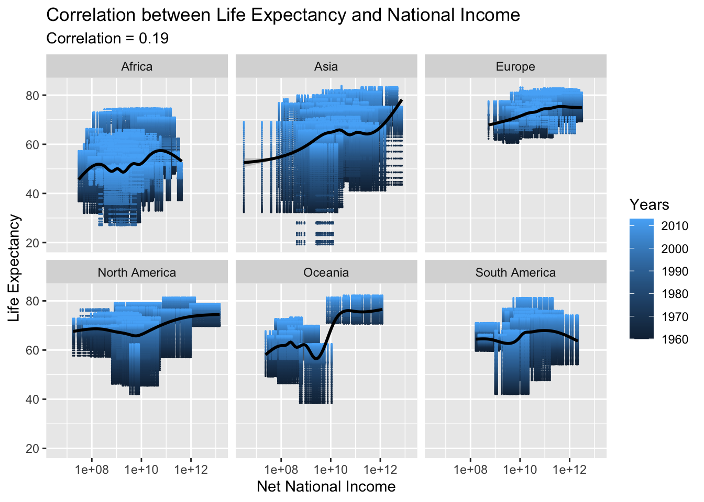
The relationship between Net National Income and life expectancy appears to be weak, as the correlation is low. In some continents such as Asia and North America, there may be a slight correlation, but in most other continents the correlation is not significant. This suggests that Net National Income may not be a significant predictor of life expectancy in many parts of the world.
National expenditure refers to the total amount of money spent by a country’s government, businesses, and individuals. It is an aggregate measure of a country’s total economic activity and can include spending on goods and services, investments, and transfers. National expenditure is one of the key indicators of a country’s overall economic health and can be used to measure changes in a country’s standard of living, economic growth, and productivity.
data_Exdpenditure <- data %>%
filter(IndicatorName == "Gross national expenditure (constant 2005 US$)")
data_Exdpenditure <- data_Exdpenditure %>%
rename(Expenditure = Value)
data_LE_Expenditure <- left_join(data_LifeExpectancy, data_Exdpenditure, by = 'CountryCode')data_filtered <- data_LE_Expenditure %>%
filter(Continent.x %in% c("Africa", "Asia", "Europe", "North America", "Oceania", "South America"))
anim11 <- ggplot(data_filtered , aes(Expenditure, LifeExpectancy, size= round(LifeExpectancy/10, 2) , colour = CountryName.x)) +
geom_point(alpha = 0.9, show.legend = FALSE, na.rm=TRUE) +
scale_size(range = c(0.1, 1)) +
scale_x_log10() +
facet_wrap(~Continent.x) +
# Here comes the gganimate specific bits
labs(title = 'Year: {frame_time}', x = 'Gross national expenditure', y = 'life expectancy') +
transition_time(Year.x) +
ease_aes('linear')
animate(anim11, renderer = magick_renderer(loop = TRUE))
RV.MLG <- round(cor( data_LE_Expenditure$Expenditure, data_LE_Expenditure$LifeExpectancy, use= "pairwise.complete.obs"), digits= 3)
ggplot(data = data_LE_Expenditure) + aes(y = LifeExpectancy, x = Expenditure , color= Year.x) +
geom_point(size=0.005, na.rm=TRUE)+
geom_smooth(color="black")+
scale_x_log10() +
facet_wrap(~Continent.x) +
labs(x="Gross National Expenditure", y= "Life Expectancy", color= "Years")+
ggtitle("Correlation between Life Expectancy and National Expenditure", subtitle = str_c("Correlation", " = ", RV.MLG))`geom_smooth()` using method = 'gam' and formula = 'y ~ s(x, bs = "cs")'Warning: Removed 779 rows containing non-finite values (`stat_smooth()`).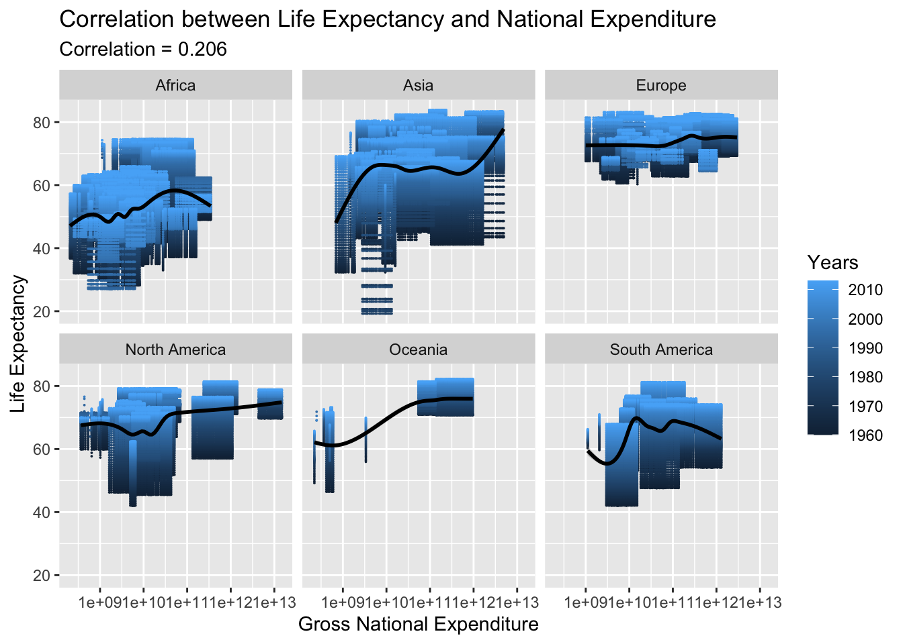
Same as Net National Income even National expenditure has very low correlation 0.206.
Exports budget refers to the amount of money allocated for the sale of goods or services to foreign countries. This budget helps to determine the resources available for promoting exports and expanding foreign markets. It is a key factor in the overall economic development of a country as exports play an important role in increasing the economic growth and generating foreign currency.
data_Exports <- data %>%
filter(IndicatorName == "Merchandise exports (current US$)")
data_Exports <- data_Exports %>%
rename(Exports = Value)
data_LE_Exports <- left_join(data_LifeExpectancy, data_Exports, by = 'CountryCode')data_filtered <- data_LE_Exports %>%
filter(Continent.x %in% c("Africa", "Asia", "Europe", "North America", "Oceania", "South America"))
anim12 <- ggplot(data_filtered , aes(Exports, LifeExpectancy, size= round(LifeExpectancy/10, 2) , colour = CountryName.x)) +
geom_point(alpha = 0.9, show.legend = FALSE, na.rm=TRUE) +
scale_size(range = c(0.1, 1)) +
scale_x_log10() +
facet_wrap(~Continent.x) +
# Here comes the gganimate specific bits
labs(title = 'Year: {frame_time}', x = 'Exports Budget', y = 'life expectancy') +
transition_time(Year.x) +
ease_aes('linear')
animate(anim12, renderer = magick_renderer(loop = TRUE))
RV.MLG <- round(cor( data_LE_Exports$Exports, data_LE_Exports$LifeExpectancy, use= "pairwise.complete.obs"), digits= 3)
ggplot(data = data_LE_Exports) + aes(y = LifeExpectancy, x = Exports , color= Year.x) +
geom_point(size=0.005, na.rm=TRUE)+
geom_smooth(color="black")+
scale_x_log10() +
facet_wrap(~Continent.x) +
labs(x="Exports Budget", y= "Life Expectancy", color= "Years")+
ggtitle("Correlation between Life Expectancy and Exports Budget", subtitle = str_c("Correlation", " = ", RV.MLG))`geom_smooth()` using method = 'gam' and formula = 'y ~ s(x, bs = "cs")'Warning: Removed 284 rows containing non-finite values (`stat_smooth()`).The correlation between exports budget and life expectancy is 0.201, which indicates that there is a slight positive relationship between the two variables, but it is not very strong. An increase in exports budget could lead to an increase in life expectancy, but other factors may also have an impact.
This indicator is self-explanatory.
data_Population <- data %>%
filter(IndicatorName == "Population, total")
data_Population <- data_Population %>%
rename(Population = Value)
data_LE_Population <- left_join(data_LifeExpectancy, data_Population, by = 'CountryCode')data_filtered <- data_LE_Population %>%
filter(Continent.x %in% c("Africa", "Asia", "Europe", "North America", "Oceania", "South America"))
anim13 <- ggplot(data_filtered , aes(Population, LifeExpectancy, size= round(LifeExpectancy/10, 2) , colour = CountryName.x)) +
geom_point(alpha = 0.9, show.legend = FALSE, na.rm=TRUE) +
scale_size(range = c(0.1, 1)) +
scale_x_log10() +
facet_wrap(~Continent.x) +
# Here comes the gganimate specific bits
labs(title = 'Year: {frame_time}', x = 'Total Population', y = 'life expectancy') +
transition_time(Year.x) +
ease_aes('linear')
animate(anim13, renderer = magick_renderer(loop = TRUE))
RV.MLG <- round(cor( data_LE_Population$Population, data_LE_Population$LifeExpectancy, use= "pairwise.complete.obs"), digits= 3)
ggplot(data = data_LE_Population) + aes(y = LifeExpectancy, x = Population , color= Year.x) +
geom_point(size=0.005, na.rm=TRUE)+
geom_smooth(color="black")+
scale_x_log10() +
facet_wrap(~Continent.x) +
labs(x="Total Population", y= "Life Expectancy", color= "Years")+
ggtitle("Correlation between Life Expectancy and Total Population", subtitle = str_c("Correlation", " = ", RV.MLG))`geom_smooth()` using method = 'gam' and formula = 'y ~ s(x, bs = "cs")'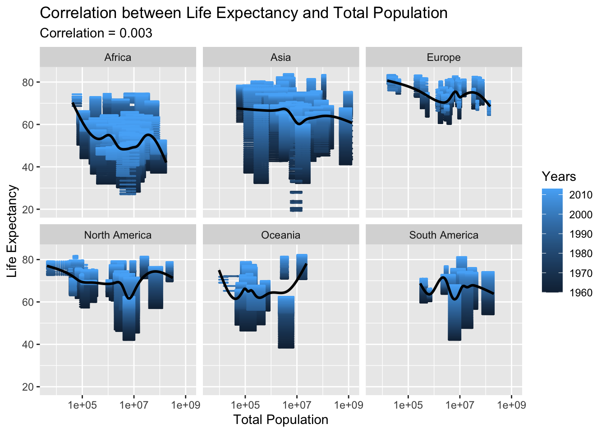
We can say Population has no correlation with Life Expectancy.
The Age Dependency Ratio is a demographic indicator that measures the proportion of people in a population who are too young or too old to work relative to the number of people who are of working age. It is calculated as the sum of the youth dependency ratio (people ages 0-14) and the old-age dependency ratio (people ages 65 and older) divided by the working-age population (ages 15-64). This ratio provides information on the demographic pressure on the working-age population in terms of caring for the young and elderly populations.
data_ADR <- data %>%
filter(IndicatorName == "Age dependency ratio (% of working-age population)")
data_ADR <- data_ADR %>%
rename(ADR = Value)
data_LE_ADR <- left_join(data_LifeExpectancy, data_ADR, by = 'CountryCode')data_filtered <- data_LE_ADR %>%
filter(Continent.x %in% c("Africa", "Asia", "Europe", "North America", "Oceania", "South America"))
anim14 <- ggplot(data_filtered , aes(ADR, LifeExpectancy, size= round(LifeExpectancy/10, 2) , colour = CountryName.x)) +
geom_point(alpha = 0.9, show.legend = FALSE, na.rm=TRUE) +
scale_size(range = c(0.1, 1)) +
scale_x_log10() +
facet_wrap(~Continent.x) +
# Here comes the gganimate specific bits
labs(title = 'Year: {frame_time}', x = '% Working-Age Population', y = 'life expectancy') +
transition_time(Year.x) +
ease_aes('linear')
animate(anim14, renderer = magick_renderer(loop = TRUE))
RV.MLG <- round(cor( data_LE_ADR$ADR, data_LE_ADR$LifeExpectancy, use= "pairwise.complete.obs"), digits= 3)
ggplot(data = data_LE_ADR) + aes(y = LifeExpectancy, x = ADR , color= Year.x) +
geom_point(size=0.005, na.rm=TRUE)+
geom_smooth(color="black")+
scale_x_log10() +
facet_wrap(~Continent.x) +
labs(x="% Working-Age Population", y= "Life Expectancy", color= "Years")+
ggtitle("Correlation between Life Expectancy and % Working-Age Population", subtitle = str_c("Correlation", " = ", RV.MLG))`geom_smooth()` using method = 'gam' and formula = 'y ~ s(x, bs = "cs")'Warning: Removed 170 rows containing non-finite values (`stat_smooth()`).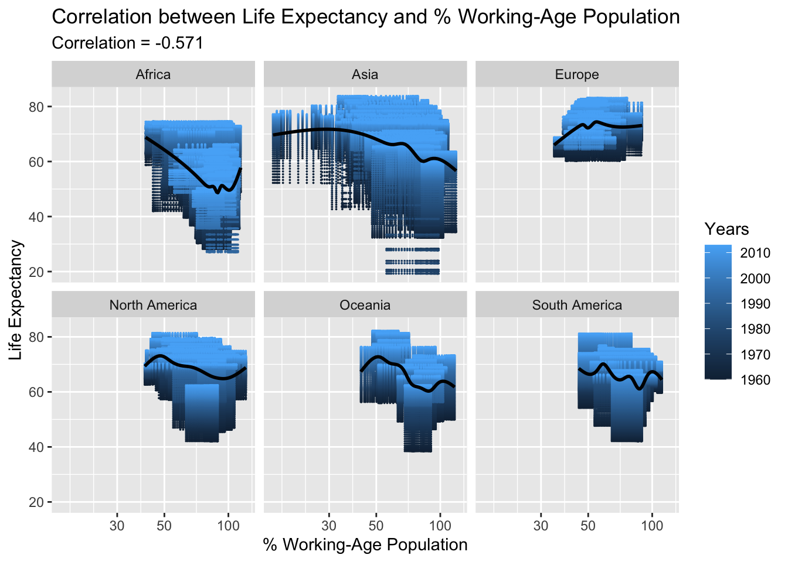
The age dependency ratio on the working-age population has a strong negative correlation with life expectancy, meaning a higher age dependency ratio has a detrimental effect on life expectancy. This is understandable as a declining working population can lead to reduced economic growth, lower health conditions, and ultimately, lower life expectancy.
The official budget for a country’s development refers to the amount of money that the government of a country has allocated for development projects, infrastructure, and public services. This budget is usually determined by the government and is used to fund initiatives aimed at improving the overall standard of living for the citizens of the country. The official budget for a country’s development can include funding for education, healthcare, transportation, housing, and other important social services.
data_development <- data %>%
filter(IndicatorName == "Net official development assistance received (current US$)")
data_development <- data_development %>%
rename(Development = Value)
data_LE_development <- left_join(data_LifeExpectancy, data_development, by = 'CountryCode')data_filtered <- data_LE_development %>%
filter(Continent.x %in% c("Africa", "Asia", "Europe", "North America", "Oceania", "South America"))
anim15 <- ggplot(data_filtered , aes(Development, LifeExpectancy, size= round(LifeExpectancy/10, 2) , colour = CountryName.x)) +
geom_point(alpha = 0.9, show.legend = FALSE, na.rm=TRUE) +
scale_size(range = c(0.1, 1)) +
scale_x_log10() +
facet_wrap(~Continent.x) +
# Here comes the gganimate specific bits
labs(title = 'Year: {frame_time}', x = 'Net official development budget', y = 'life expectancy') +
transition_time(Year.x) +
ease_aes('linear')
animate(anim15, renderer = magick_renderer(loop = TRUE))Warning in self$trans$transform(x): NaNs producedWarning: Transformation introduced infinite values in continuous x-axis
RV.MLG <- round(cor( data_LE_development$Development, data_LE_development$LifeExpectancy, use= "pairwise.complete.obs"), digits= 3)
ggplot(data = data_LE_development) + aes(y = LifeExpectancy, x = Development , color= Year.x) +
geom_point(size=0.005, na.rm=TRUE)+
geom_smooth(color="black")+
scale_x_log10() +
facet_wrap(~Continent.x) +
labs(x="Net official development budget", y= "Life Expectancy", color= "Years")+
ggtitle("Correlation between Life Expectancy and Net official development budget", subtitle = str_c("Correlation", " = ", RV.MLG))Warning in self$trans$transform(x): NaNs producedWarning: Transformation introduced infinite values in continuous x-axisWarning in self$trans$transform(x): NaNs producedWarning: Transformation introduced infinite values in continuous x-axis`geom_smooth()` using method = 'gam' and formula = 'y ~ s(x, bs = "cs")'Warning: Removed 8402 rows containing non-finite values (`stat_smooth()`).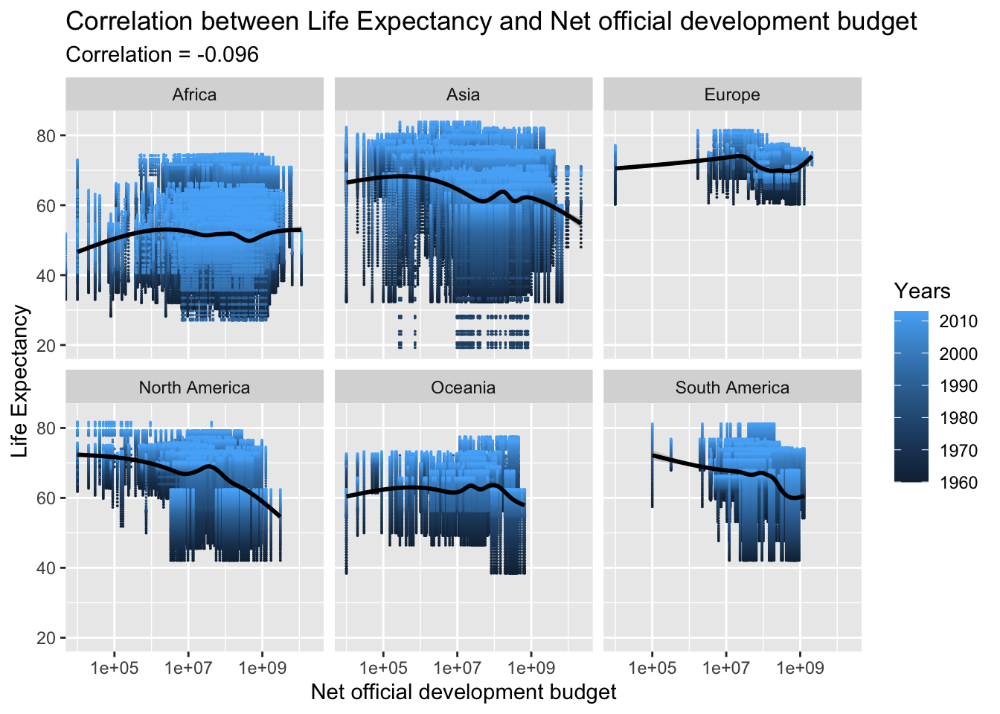
The correlation between the official budget for a country’s development and life expectancy is very low and negative, with a correlation coefficient of -0.096. This relationship can be disregarded as it is likely influenced by other factors and thus has a negligible impact on life expectancy.
The results of this analysis indicate that the general trend of life expectancy has been improving globally, with most countries experiencing an increase. While there may be a few exceptions, the majority of countries have seen a rise in their life expectancy.
For the research question-2, the correlation between life expectancy and various factors like GDP, National Income, National Expenditure, and Exports Budget was decent. However, the correlation was not very strong and further analysis with additional data might be needed to identify the major contributors to the increase in life expectancy.
Improved data readability by incorporating appropriate visualizations. Enhances the experience and facilitates quicker analysis through the use of animations where feasible.
This class was very difficult yet fulfilling. Every time I faced an obstacle and managed to find a solution, it was very satisfying because I had put in a lot of effort and exploration. I thoroughly enjoyed learning this material, and feel like I’ve only just begun. I am eager to continue learning and apply my skills to new datasets, and see where they take me.
I am grateful for this opportunity to learn and try something new. It was humbling and gratifying to be a student again. I also want to give a special mention to Sean Conway for the feedback which really helped me to work better in my project.
Dataset: Dataset link - https://www.kaggle.com/datasets/kaggle/world-development-indicators
Plotting: https://r-graph-gallery.com/index.html
Basics of R: https://classroom.google.com/u/3/w/NTc2ODM4NTQzMzEx/t/all
Analysis of the Indicators: World Bank (Google sources)